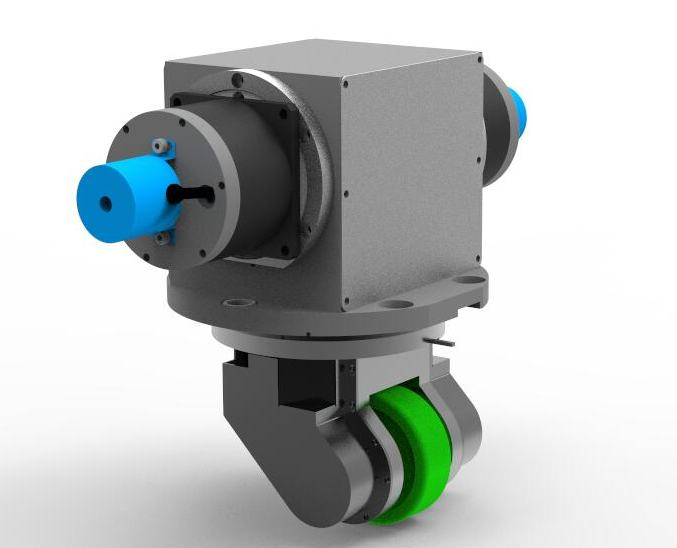
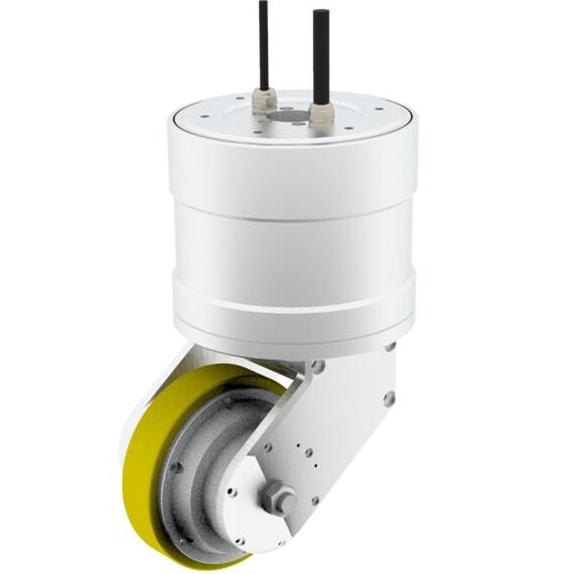
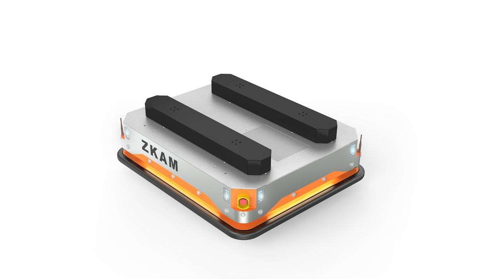

近年来智能制造、电商物流等行业的快速发展对移动机器人产生了强劲需求，市场规模急剧扩大。据英国Interact Analysis 最新预测，2020年国际移动机器人市场将达到24亿美元，较2019年增长24％，2021年将进一步增长50％。展望未来，移动机器人将迎来爆发式增长，市场空间巨大。然而，目前移动机器人在底盘驱动方式和定位导航系统设计仍存在一些技术瓶颈，导致机动灵活性差、运动精度低，制约了移动机器人的性能和应用范围。
与传统的移动机器人相比，本项目设计的智能全向移动机器人的创新性主要表现在灵活性、绿色节能、智能化等方面，具体如下：
机动灵活性：本项目创新设计了一种基于解耦机构的主动万向脚轮和新型全向移动机器人，具备直行、侧行、斜行、原地转向等全方位运动能力，其机动灵活性明显优于传统差速轮驱动的移动机器人。
绿色节能：本项目设计的全向移动机器人在运动过程中其驱动脚轮与地面始保持连续滚动接触，并通过脚轮的解耦传动有效消除了脚轮与地面间的滑转和滑移现象，提高了驱动效率和运动控制精度，也避免了对地面的损伤，显著提升了移动机器人的绿色节能程度。
智能化：本项目设计的全向移动机器人安装有里程计、惯导、激光和视觉传感器，通过多信息融合技术实现了对非结构化作业环境的智能感知、大范围地图构建、自主定位导航及精确运动控制，智能化程度高。
国际领先的移动机器人厂商如KUKA、MobileRobots、Mobile Industrial Robot等，其全向移动机器人均采用麦克娜姆轮驱动，不仅驱动效率低、承载能力差，还容易损伤地面。Holomni公司（现已被Google收购）发明并生产了一种用于全向移动机器人的主动万向脚轮，但存在转向和滚动运动耦合的问题，难于实现精确的解耦驱动控制，运动精度也较差。国内的移动机器人厂商如新松自动化、昆船、国自等，其移动机器人一般采用差速轮驱动，不具备全向移动能力，机动灵活性差。
研发团队以技术合作的方式分别向浙江吉利汽车、宁波如意、北京理工大学、沈阳自动化研究所等单位提供了主动万向脚轮和全向移动机器人共12台套，并与多家公司达成合作意向。
本项目共获得授权专利11项，其中发明专利6项，实用新型专利5项。
移动机器人要实现全向移动功能，就需要有支持全向移动功能的驱动轮。我们日常所见的各类办公桌椅、购物小推车等底部移动部件均采用脚轮的结构形式，它具有两个运动自由度，即滚轮绕水平轴滚动的主运动和绕竖直轴线转动的转向运动，通过这两个运动配合使主体可以实现直行、侧行、斜行、原地转向等运动，具备在狭小空间内灵活机动的运动能力。但此类脚轮一般采用惰轮形式，不具备主动驱动能力。如果将此类惰轮进行创新设计，变为主动驱动形式，将会形成具备主动驱动能力的万向脚轮，搭载此类脚轮的平台将具有全向移动能力。
此外，移动机器人一般面对的是柔性化生产，作业起始点或终点会发生变化，运动路径也会发生相应调整变化，这就需要其对周围的工作环境进行地图构建，并基于构建的地图实现自主定位导航，而采用非接触测量的激光或视觉作为定位导航传感器无论在精度、效率、可靠性等方面都要优于传统的磁条、磁带或QR码方式。
所设计的主动万向脚轮具有两个运动自由度，即绕水平轮轴滚动和绕垂直轮轴的回转运动，而两个轮轴之间有一个偏置距离。为了避免导线的缠绕，脚轮的两个驱动电机都固定在基座上。传统的万向脚轮传动系统设计造成了脚轮两个转动自由度运动耦合，即在脚轮在绕垂直轴转向时会使得脚轮产生一个绕水平轴的伴随滚动运动。这个伴随的转动，对于移动机器人的运动规划和控制带来了不必要的麻烦，需要实时的解耦控制。一旦出现控制误差，脚轮会出现滑转、滑移甚至是侧滑，影响了移动机器人的运动平稳性，也会造成滚轮的过度磨损。为解决这一难题，我们提出了具有运动解耦特性的主动万向脚轮传动设计方案。设计原理方面采取了先耦合再解耦的运动学解耦策略，在脚轮的两套运动传动系统中引入一个具有2个自由度的行星齿轮机构，这样转向电机在输出转向运动的同时，通过该行星齿轮机构将输出另一部分运动用于消除脚轮的转向运动和滚动运动产生的运动耦合问题，只要通过设置适合的传动参数即可实现脚轮的运动学解耦。
移动机器人作业性能除了与驱动脚轮有关，还依赖于大范围地图构建与自主定位导航能力。为提高移动机器人地图构建与定位导航能力，本项目从两方面入手，一方面提出高效地图表示方法，通过融合拓扑地图和标度地图表示方法，降低地图构建复杂性，提高地图构建效率；另一方面提出多传感器融合的定位导航方法，提高定位导航效率和精度。其中，地图由包含拓扑关系和局部度量的地图册定义，拓扑关系的节点是局部地图，全局地图由拓扑关系把多张局部地图关联在一起进行描述。融合里程计、惯导、视觉和激光等多种传感器新兴，并采用滑动窗口图优化技术实现高效位姿估计，通过在线标定技术进一步提升定位精度。当里程估计超过一定距离时，累积的激光数据可以组成范围更大的局部地图，通过与系统中存储的地图进行匹配，减小动态环境对移动机器人定位导航的影响。
1）产品设计方法科学性
本项目设计的全向移动机器人具有机动灵活性、绿色节能和智能化等特点，特别适应狭窄作业空间。新型全向移动机器人的这些特点得益于主动万向脚轮和自主定位导航算法的创新设计，其创新性和科学性具体分析如下：
基于解耦机构的主动万向脚轮设计具有创新性和科学性。本项目在设计主动万向脚轮时，在主动万向脚轮的驱动传动系统和转向传动系统之间加入一组行星齿轮机构，转向传动系统和驱动传动系统通过该行星齿轮机构关联，使转向传动系统在执行转向运动的同时，向驱动传动系统输入一定速度的运动来抵消滚轮额外的滚动运动输出，达到运动解耦的目的，使主动万向脚轮在执行转向运动时无额外的滚轮滚动运动输出，从而最终完成解耦式主动万向脚轮的设计。
基于多传感融合的移动机器人定位导航方法具有创新性和科学性。本项目通过融合里程计、惯导、视觉和激光传感器，采用滑动窗口图优化技术实现高效位姿估计，并且通过在线标定技术进一步提升定位精度。当里程估计超过一定距离时，累积的传感器数据可以组成范围更大的局部地图，通过与系统中存储的地图进行匹配，减小动态环境或环境纹理特征缺失对定位导航的影响，从而提高移动机器人定位导航的精度和可靠性。
2）产品功能设计有效性
本项目设计的全向移动机器人由于采用基于解耦运动的主动万向脚轮和基于多传感器融合的定位导航算法，在灵活性、绿色节能、智能化等方面具有突出表现，具体为：
机动灵活性：本项目设计的全向移动机器人可实现任意的三自由度平面轨迹运动（如直行、侧行、斜行、原地360°转动），具有高度的机动灵活性，特别适用于空间狭窄、拥挤的作业环境。而全向移动平台的灵活性得益于解耦式主动万向脚轮的创新设计，该脚轮的两个驱动电机通过一个特别设计的解耦传动机构可以分别独立、无耦合地驱动绕垂直轴和水平轴的旋转运动。
绿色节能：本项目设计的主动万向脚轮因滚轮和地面的接触点始终保持连续，可以获得很高的驱动效率，并且通过对驱动万向脚轮进行运动解耦可以有效消除脚轮的滑转和滑移现象，提高移动机器人的运动精度，避免在运行时对地面产生损伤，具有良好的绿色节能性能。
智能化：本项目设计的全向移动机器人安装有里程计、惯导、视觉和激光等传感器，通过多传感器新兴融合技术实现对车间环境的精确测量与大范围地图构建，并基于自主构建的地图实现对机器人的自主定位导航控制，智能化程度高。
本项目设计的解耦式主动万向脚轮以及基于主动万向脚轮的全向移动机器人在技术先进性、创新性、成熟度均具有产品竞争优势，研发团队有深厚的研究基础，具体分析如下：
产品技术先进，性价比高：团队主要产品包括了解耦式主动万向脚轮，直驱式万向脚轮及基于万向脚轮的全向移动平台，解耦式主动万向脚轮为国际范围内的创新产品，holomni 公司（已被Google公司收购）设计的主动万向脚轮无法实现滚动与转向的解耦，带来较大的滑转滑移问题，而 Kuka等公司使用的麦克纳姆轮具有摩擦力大、负载低等缺点。本团队发明的解耦式主动万向脚轮能够实现纯滚动条件下的 0-360°全向运动，消除了滑转滑移问题，驱动效率高，负载大，且长期使用不易损伤地面。此外，团队结合了自身在电机设计、驱动控制方面的优势，能够从材料到电机再到驱动控制，提供全链条、源头上的技术方案和服务，能够利用源头优势降低产品生产成本，性价比高。
产品技术成熟度高：研发团队以技术合作的方式为多家单位提供了产品和服务，分别向浙江吉利汽车有限公司提供车间自动化物流搬运的全向移动机器人4台；向宁波如意股份有限公司提供具有智能跟踪功能的物流机器人系统2套，自主导航全向移动智能叉车1台；向北京理工大学提供双轮直驱动力万向脚轮3套，用于服务机器人的全向移动平台1台；向沈阳自动化研究所提供用于堤坝巡检的智能全向移动机器人1台。
产品研发团队技术力量雄厚：产品所在团队已经拥有一支三十余人的研发队伍，研发人员70%以上具有博士学历或副高职称。通过多年的技术攻关，研发人员已经打通了材料-电机设计-电机制造-驱动器设计及制造-运动控制系统研发-机器人系统集成与应用的完整技术链条，利于从材料、器件、系统等全维度来进行优化设计和攻关，集众家之长来提高产品的性能和品质。产品拥有完全的自主知识产权，可以从源头性技术进行改造和论证，为客户量体裁衣，利于客户获得最终性价比。
基于上述创新设计思想，本项目已研发了机械解耦式主动万向脚轮和直驱式主动万向脚轮两种用于移动机器人的脚轮，两种脚轮均具有解耦机构，并基于主动万向脚轮研发了智能全向移动机器人。可实现直行、侧行、斜行和原地360°转动，具有很好的机动灵活性，具有基于多传感融合的自主定位导航功能。产品的主要特色及参数如下：
1）机械解耦式主动万向脚轮
机械解耦式主动万向脚轮主要包括滚轮、轮轴、轮架、驱动装置、转向装置和差速装置等。轮轴穿过滚轮安装在轮架上，且轮轴带动滚轮滚动，驱动装置与转向装置分别安装在轮架上，差速装置安装在驱动装置与转向装置之间，对滚轮的滚动运动和转向运动进行解耦，防止转向装置控制滚轮转向时驱动装置对滚轮产生额外的滚动输出，是滚轮滚动平稳。驱动装置包括驱动电机和驱动齿轮组，驱动电机带动驱动齿轮组转动控制滚轮滚动，转向装置包括转向电机和转向齿轮组，转向电机带动转向齿轮组转动控制滚轮转向。
2）直驱解耦式主动万向脚轮
直驱解耦式主动万向脚轮主要包括轮毂电机、轮架、转向电机等。轮毂电机的定子固定安装在轮架上，通过驱动器控制轮毂电机转子转动，实现脚轮滚动。转向电机转子固定安装在轮架顶面，定子固定安装在移动平台车架上，通过驱动器控制转向电机转子转动，实现脚轮转向。利用运动学算法实现对主动万向脚轮滚动运动和转向运动的解耦。直驱解耦式主动万向脚轮所采用的轮毂电机和转向电机均为外转子永磁同步电机。
3）智能全向移动机器人
团队在解耦式主动万向脚轮的基础上，研究了全向移动平台的模块化建模理论，并且按照模块化机器人建模和设计流程，研制了智能全向移动机器人标准产品。此款智能全向移动机器人采用了四个主动万向脚轮作为驱动轮，通过运动学算法，可实现四个脚轮的协调控制，进而实现了解耦且具备三个自由度的全向移动功能，可在无需考虑机器人转弯半径（最小转弯半径为0）的情况下，直接执行0-360°任何一个方向的运动，运动的位置控制精度高。该款产品设计最大运动速度可达1m/s，承载能力大于500公斤，采用了新型锂电池作为动力源，充一次电可续航5~8个小时。此外，采用了多信息融合技术，能够实现在车间物流场合的准确定位，定位误差±10mm以内，搭载了超声波传感系统用于实现全方位自主避障，并且可通过WiFi实现远程多机协调控制。

